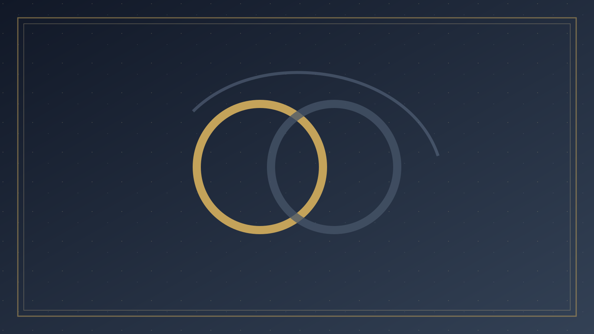

分題 02 / 08
合一與界限
二、聖經中的合一與界限
約翰福音十七章裡，耶穌為門徒祈求的合一，不是機構合併，也不是教義最低化。祂求「使他們都合而為一。正如你父在我裡面，我在你裡面」（約 17:21），這合一的原型是聖父與聖子的相交，其目的是「叫世人相信你差了我來」。合一服事見證，見證服事差遣的主。把十七章讀成「只要和睦、不必真理」，是讀反了：同一段禱告裡，耶穌說「求你用真理使他們成聖；你的道就是真理」（約 17:17）。沒有真理的合一，不能成聖，也不能叫世人相信。
「身體只有一個，聖靈只有一個，正如你們蒙召同有一個指望。一主，一信，一洗，一神，就是眾人的父。」
— 以弗所書 4:4–6
以弗所書 4:1–16 把合一放在身體論裡。信徒要「竭力保守聖靈所賜合而為一的心」（4:3）——合一是聖靈已賜的，人是保守，不是發明。同時，升天的基督賜下使徒、先知、傳福音的、牧師和教師，為要「成全聖徒……直等到我們眾人在真道上同歸於一」（4:11–13）。合一不是取消職事與教導，而是在真理中長大，不再「中了人的詭計和欺騙的法術」（4:14）。一主、一信、一洗：這三「一」劃出教會的核心認同；恩賜的多元則在這核心之內運作，而不是另立一個身體。
使徒行傳十五章的耶路撒冷會議，是新約裡最清楚的「為福音爭辯、卻不為次要立牆」的範例。有人主張外邦人必須受割禮才能得救（徒 15:1）。這不是禮儀偏好，而是救恩論。會議的結論以福音為準：神「藉著我的口叫外邦人得聽福音，而且相信」（15:7）；人得救是「因主耶穌的恩」（15:11）。給外邦信徒的幾項叮囑（15:20、29），是為了團契可行與遠離偶像，不是把摩西之軛重新綁上。會議證明：教會可以、也必須公開分辨何謂福音；分辨之後，仍能給肢體留下同行的空間。
羅馬書十四至十五章處理的是另一層。吃與日、守節與不守節，保羅稱為「信心軟弱」的彼此接納，而不是另傳一個福音。「神已經收納他了」（羅 14:3）；強的不可輕看弱的，弱的不可論斷強的。十五章的目標是「一心一口榮耀神」（15:6）。把洗禮方式、敬拜音樂、末世時間表或禁食習慣抬到加拉太書一章的高度，是把羅馬書十四章讀丟了。反之，把稱義、基督的位格、復活或「另一個福音」降到羅馬書十四章的高度，是把加拉太書讀丟了。
必須保守的核心
「一主，一信，一洗」；基督照聖經死而復活（林前 15:1–11）；因信稱義的福音不被更換（加 1–2）。此處沒有「各適其適」。
必須彼此接納的次要
飲食、日子、文化習慣、許多教會秩序上的差異。羅 14 的邏輯是：主能叫他站住；你不是他的主。
界限的經文同樣清楚。提摩太後書 4:3–4 預告：人必厭煩純正的道理，「耳朵發癢，就隨從自己的情慾增添好些師傅」，並且「掩耳不聽真道，偏向荒渺的言語」。約翰二書 7–11 把否認耶穌基督成了肉身的稱為迷惑人的；對不傳這教訓的，連家裡的接待都要謹慎，免得在惡行上有份。加拉太書二章，保羅在安提阿當面抵擋彼得，因為福音的真理因怕奉割禮的人而妥協——「怕」可以毀掉「一信」。合一不是無限延展的禮貌；它停在使徒見證被改寫之處。